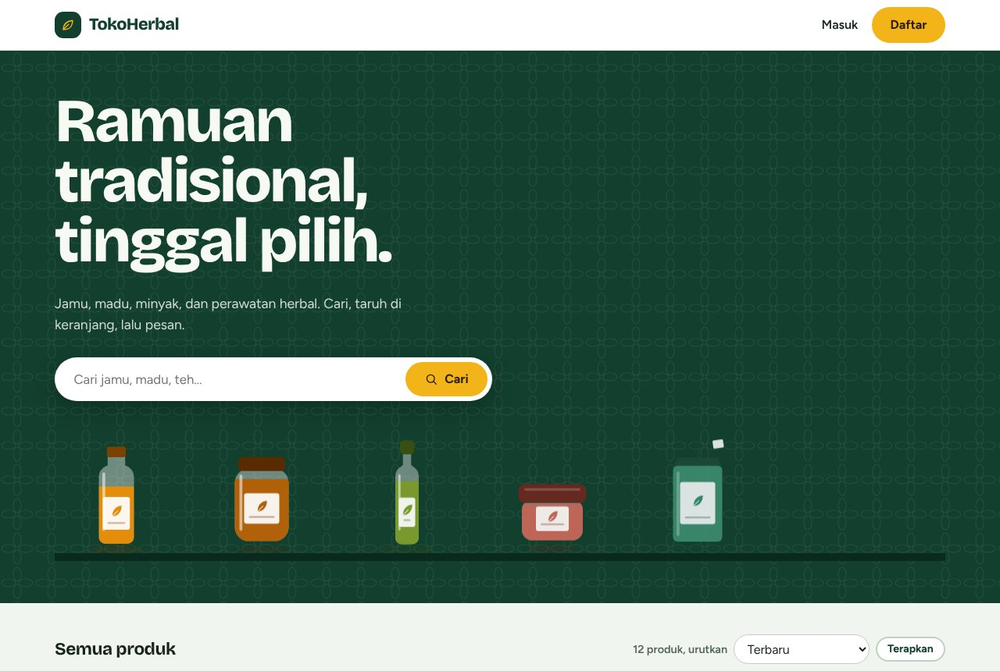
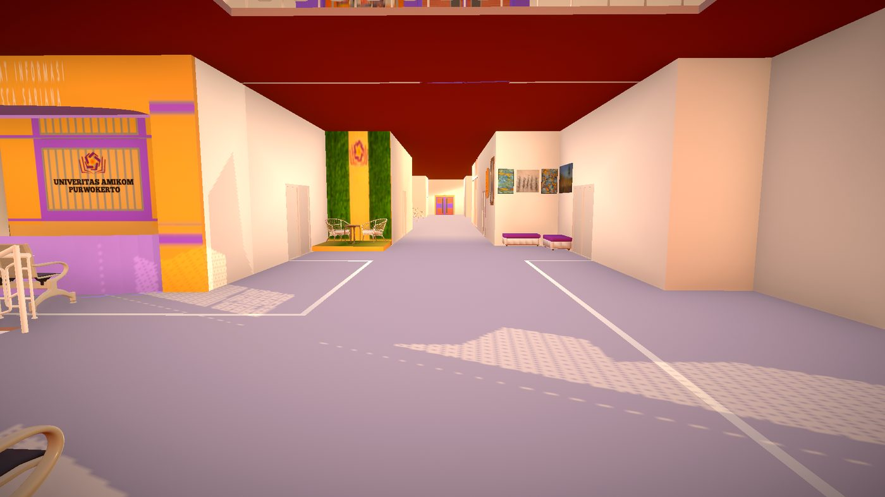
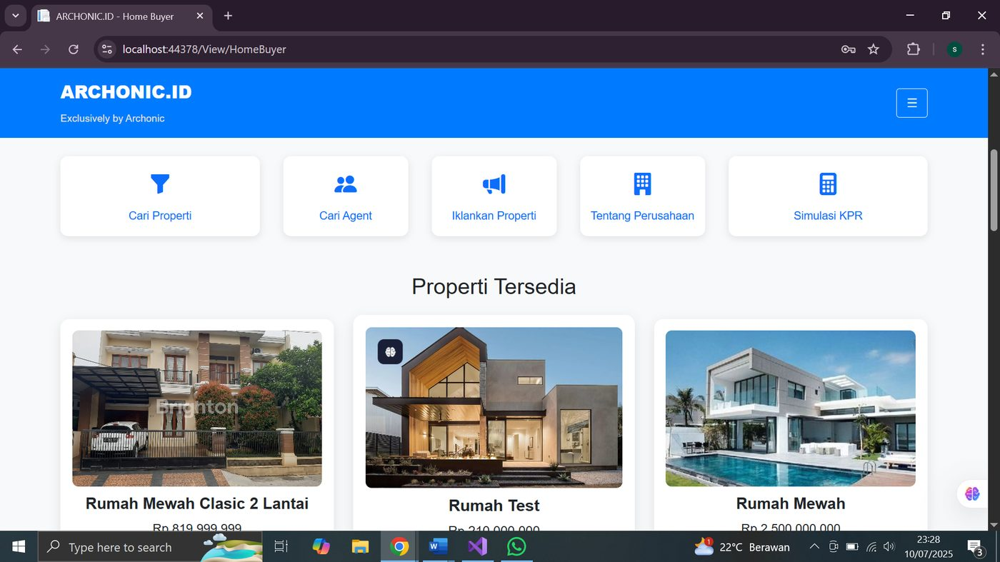
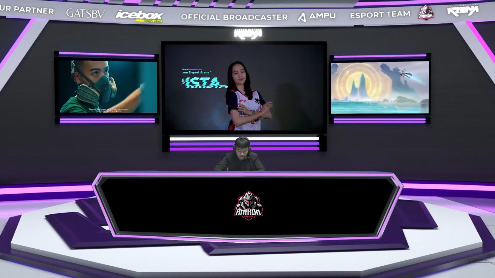

CUE 01 — ON AIR
Informatics graduate building backend and web systems, with a live-production background.
GO · POSTGRESQL · REDIS · DOCKER · NEXT.JS · UNITY
CUE 02 — BEHIND THE GLASS
I'm an Informatics graduate (2026) from Universitas Amikom Purwokerto. I build web backends and interactive 3D apps. My latest project, TokoHerbal, is a full-stack store made of Go services, PostgreSQL, Redis, and Docker, with automated tests and CI.
Alongside my degree I worked in live production: LED/Videotron visuals, OBS Studio streaming, and tournament broadcasts. That work taught me to stay calm when something breaks while the show is live. I bring the same habit to debugging, monitoring, and keeping a system running.
CUE 03 — SOURCE CODE
I'm strongest on the backend and on getting a system from "works on my laptop" to "runs in containers with tests and CI". I also build interfaces and 3D experiences.
CUE 04 — REEL

A herbal products store split into an auth service and a product service, each with its own PostgreSQL database, plus a Redis cache and a Next.js frontend. Everything runs with one docker compose up.

Universitas Amikom Purwokerto — an interactive virtual tour that helps prospective students explore the campus layout in 3D. I handled the building layout, environment, UI/UX, and the Unity build end to end. This was my final project.
View Live Demo →
A marketplace web app for buying, renting, and listing properties (houses, boarding rooms, apartments) with role-based access control and features for both buyers and sellers. Built with ASP.NET in Visual Studio.

Designed and operated the on-screen layout for online tournament broadcasts: scene composition, overlays, and real-time scene switching in OBS Studio.
CUE 05 — LIVE OPERATIONS
My second track. Live events are where I learned to work under real-time pressure with a team.
CUE 06 — FRAME BY FRAME
CUE 07 — RUNDOWN
First steps into event production: visual design, photography, and multimedia crew work.
GPA 3.68/4.00. Final project: an interactive 3D Virtual Tour built with Unity and Blender.
Backstage streaming operations and live event visual production.
A full-stack store with Go services, PostgreSQL, Redis, Docker, tests, and CI, built step by step to learn how real backends are put together.
Looking for junior roles in backend, web, or software development and IT. Also open to game development and event multimedia / live production work.
CUE 08 — STANDBY
Have a project that needs software, a web app, or a live production setup? Let's talk.